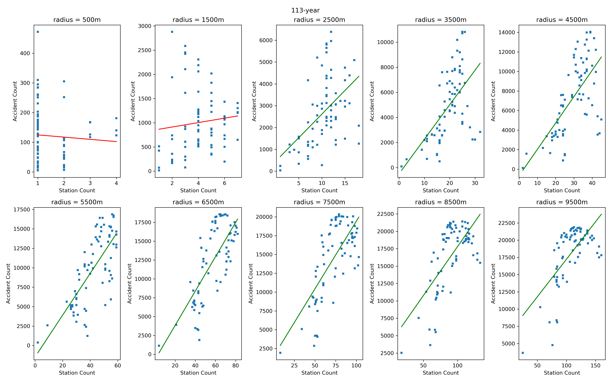
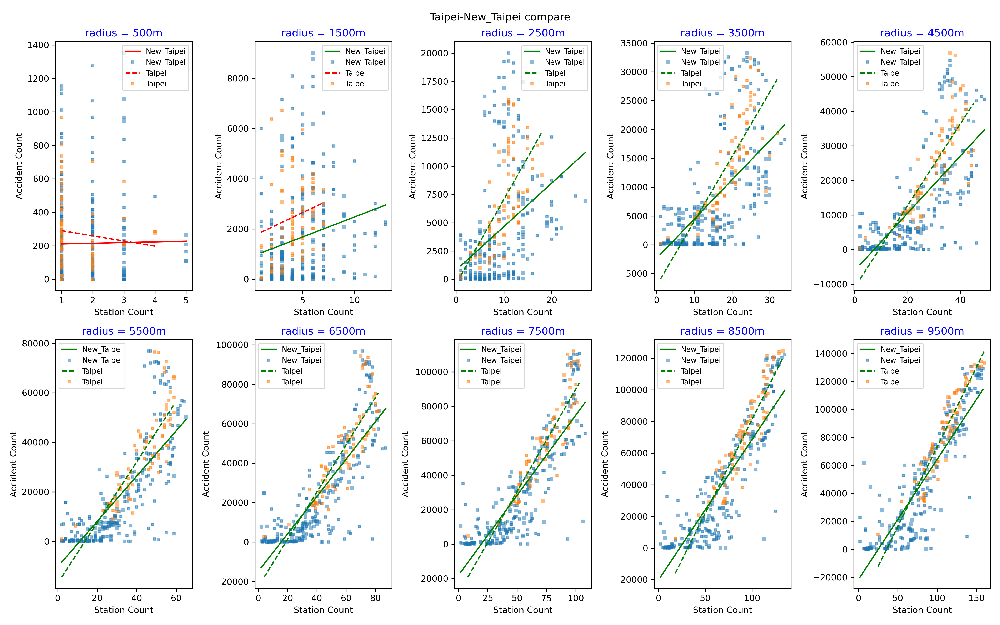
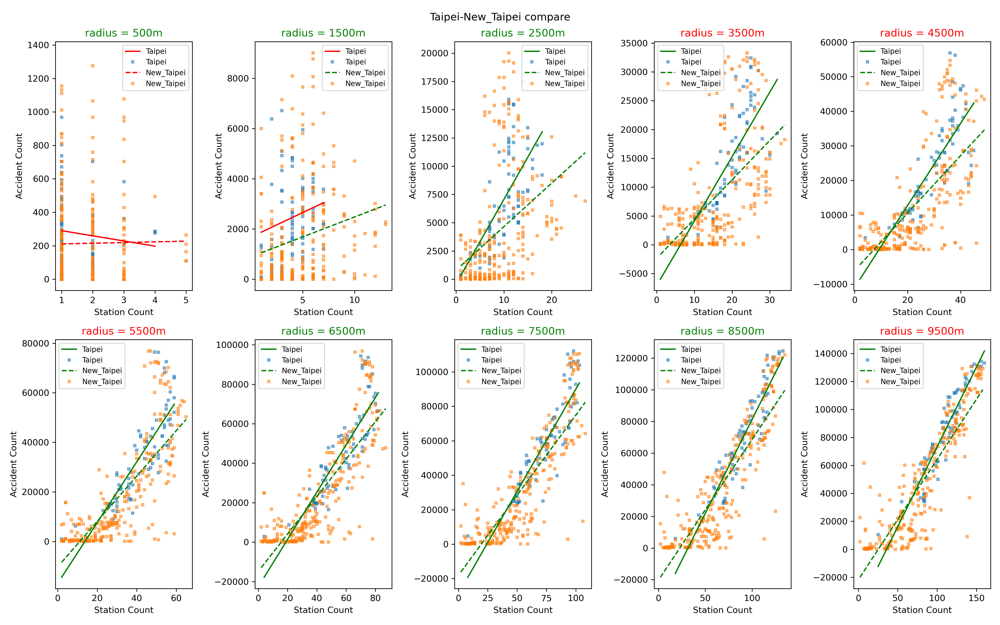

雙北市測速照相與車禍空間關係研究
Spatial Relationship between Speed Cameras & Accidents
探索性資料分析 (EDA) 與統計假說檢定總覽 / Overview of Exploratory Data Analysis & Hypothesis Testing
Years 110 - 113
核心研究發現與視覺化結果 / Core Findings & Visualizations
[中文] 本研究發現測速照相與車禍分布存在顯著空間正相關。台北市 110-113 歷年最優半徑均為 5,400公尺（ρ分別達 0.672、0.690、0.684、0.700）。Fisher's Z-test 檢定證實雙北相關性高度一致；而在 9.5 公里半徑下，Mann-Whitney U 檢定表明**台北市的事故負荷比（事故數/相機數）顯著小於新北市**，暗示台北市設置數量較足夠，設立合理性較高。
[English] This study reveals a significant positive spatial correlation between speed cameras and accidents. The optimal radius in Taipei is consistently 5,400m across Yr 110-113 (ρ: 0.672, 0.690, 0.684, 0.700). Fisher's Z-test confirms high consistency in correlation between Taipei and New Taipei. However, under a 9.5km radius, the Mann-Whitney U test shows **Taipei has a statistically smaller accident load ratio** than New Taipei, indicating Taipei's deployment is more adequate and rational.

Taipei 113 Speed Camera Density Map

Correlation Coefficients across Radii

Spatial Variation of Correlation
分析步驟導覽 / Walkthrough
點擊左側選單可載入完整 Jupyter Notebook 互動內容與輸出：
Click the sidebar buttons to load the complete Jupyter Notebook HTML outputs:
-
1資料預處理 / Data Preprocessing車禍經緯度清理與篩選雙北範圍
Clean coordinates and filter target cities -
2PyGMT 地理製圖 / PyGMT Mapping空間密度平滑化與地圖遮罩製作
Smooth density mapping and district masking -
3臺北市半徑分析 / Taipei Radius Analysis相關係數隨搜尋半徑的敏感度變化 (尋找 5,400m 最優半徑)
Sensitivity of coefficients across radii (finding 5400m) -
4雙北市對比分析 / Taipei vs New Taipei Compare執行 Fisher's Z-test 檢定相關係數一致性
Perform Fisher's Z-test to contrast correlation patterns -
5負荷比假設檢定 / Load Ratio MWU Testing以 MWU 檢定分析 9.5km 下雙北相機事故負荷比顯著差異
Analyze accident load ratio differences using MWU test
🧮 核心演算法與工作流程說明 / Core Algorithms & Pseudocode
1. 空間半徑敏感度分析演算法 / Spatial Radius Sensitivity
[中] 以測速相機為中心建立半徑 $r$ 緩衝區 (Buffer) 統計事故數，計算 Spearman 相關係數。臺北市歷年最優半徑均為 **5,400公尺** (ρ在 113年達0.700)。
[Eng] Create buffers $B(C, r)$ centered at cameras, count accidents, and calculate Spearman correlation. The optimal radius in Taipei is consistently **5,400m** (ρ reaches 0.700 in Yr 113):
Algorithm: Spatial_Sensitivity_Correlation
For each radius r in [500m, 1500m, ..., 9500m]:
For each camera C:
Buffer B = C.buffer(r)
Accidents_In_B = filter(Accidents inside B)
C.accident_count = length(Accidents_In_B)
Calculate Spearman correlation between:
- Camera_Density and accident_counts_at_radius
Save (radius, correlation_coefficient, p_value)
2. 最小平方法線性建模 / Least Squares Linear Modeling
[中] 求解線性觀測方程 $d = G m + e$。封裝於 utils.py，提供普通最小平方 (LS) 與加權最小平方 (WLS) 矩陣運算以適配雙北趨勢線。
[Eng] Solve linear observation equation $d = G m + e$. Enclosed in utils.py to support Ordinary (LS) and Weighted Least Squares (WLS) matrix products for regression trends:
Algorithm: solveWLS (Weighted Least Squares) 1. m = Inverse(G.T @ W @ G) @ G.T @ W @ d 2. Residuals e = d - G @ m 3. RSS = Sum(e_i^2 * W_ii) 4. Residual Variance = RSS / (n - p) 5. Return m, RSS, residual_variance